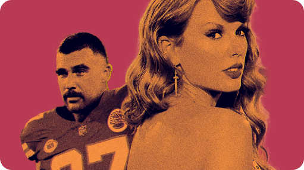
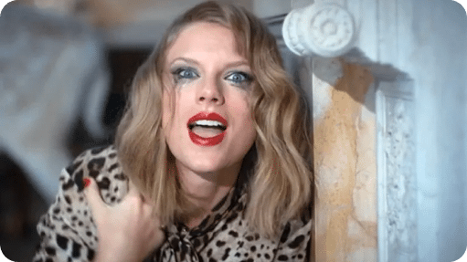
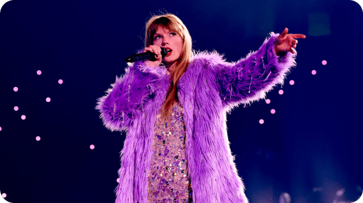

Taylor Alison Swift
(born December 13, 1989) is an American singer-songwriter.
Recognized for her songwriting, musical versatility, artistic
reinventions, and influence on the
music industry
, she is a
prominent cultural figure
of the 21st century.
Swift began professional songwriting at age 14 and signed with Big Machine Records in 2005 to become a country singer. She released six studio albums under the label, four of them to country radio , starting with her 2006 self-titled album . Her next, Fearless (2008), explored country pop , and its singles " Love Story " and " You Belong with Me " catapulted her to prominence. Speak Now (2010) infused rock influences, while Red (2012) experimented with electronic elements and featured Swift's first Billboard Hot 100 number-one song, " We Are Never Ever Getting Back Together ". She departed from her country image with 1989 (2014), a synth-pop album supported by the chart-topping songs " Shake It Off ", " Blank Space ", and " Bad Blood ". Media scrutiny inspired the hip-hop -flavored Reputation (2017) and its number-one single " Look What You Made Me Do ".
Swift signed with Republic Records in 2018. She released the pop album Lover (2019) and autobiographical documentary Miss Americana (2020), embraced indie folk and alternative rock on 2020 albums Folklore and Evermore , explored chill-out styles on Midnights (2022), and released four re-recorded albums subtitled Taylor's Version after a dispute with Big Machine. The albums spawned the number-one songs " Cruel Summer ", " Cardigan ", " Willow ", " Anti-Hero ", " All Too Well " and " Is It Over Now? ". In 2023, Swift embarked on the Eras Tour and released its accompanying concert film . She has also directed music videos and films such as All Too Well: The Short Film (2021).
With over 200 million records sold globally, Swift is one of the best-selling musicians . She is the most-streamed woman on Spotify and Apple Music , the highest-grossing female performer ever, and the first billionaire with music as the main source of income. She has been featured in lists such as Rolling Stone's 100 Greatest Songwriters of All Time , Billboard 's Greatest of All Time Artists, the Time 100 , and Forbes Celebrity 100 . Among her accolades are 12 Grammy Awards (including three Album of the Year wins), a Primetime Emmy Award , 40 American Music Awards (including Artist of the Decade – 2010s ), 39 Billboard Music Awards , 23 MTV Video Music Awards , three IFPI Global Recording Artist of the Year awards, and 111 Guinness World Records . Swift is also an advocate of artists' rights and women's empowerment .

Swift began professional songwriting at age 14 and signed with Big Machine Records in 2005 to become a country singer. She released six studio albums under the label, four of them to country radio , starting with her 2006 self-titled album . Her next, Fearless (2008), explored country pop , and its singles " Love Story " and " You Belong with Me " catapulted her to prominence. Speak Now (2010) infused rock influences, while Red (2012) experimented with electronic elements and featured Swift's first Billboard Hot 100 number-one song, " We Are Never Ever Getting Back Together ". She departed from her country image with 1989 (2014), a synth-pop album supported by the chart-topping songs " Shake It Off ", " Blank Space ", and " Bad Blood ". Media scrutiny inspired the hip-hop -flavored Reputation (2017) and its number-one single " Look What You Made Me Do ".
Swift signed with Republic Records in 2018. She released the pop album Lover (2019) and autobiographical documentary Miss Americana (2020), embraced indie folk and alternative rock on 2020 albums Folklore and Evermore , explored chill-out styles on Midnights (2022), and released four re-recorded albums subtitled Taylor's Version after a dispute with Big Machine. The albums spawned the number-one songs " Cruel Summer ", " Cardigan ", " Willow ", " Anti-Hero ", " All Too Well " and " Is It Over Now? ". In 2023, Swift embarked on the Eras Tour and released its accompanying concert film . She has also directed music videos and films such as All Too Well: The Short Film (2021).
With over 200 million records sold globally, Swift is one of the best-selling musicians . She is the most-streamed woman on Spotify and Apple Music , the highest-grossing female performer ever, and the first billionaire with music as the main source of income. She has been featured in lists such as Rolling Stone's 100 Greatest Songwriters of All Time , Billboard 's Greatest of All Time Artists, the Time 100 , and Forbes Celebrity 100 . Among her accolades are 12 Grammy Awards (including three Album of the Year wins), a Primetime Emmy Award , 40 American Music Awards (including Artist of the Decade – 2010s ), 39 Billboard Music Awards , 23 MTV Video Music Awards , three IFPI Global Recording Artist of the Year awards, and 111 Guinness World Records . Swift is also an advocate of artists' rights and women's empowerment .

[2022 - present]
PHOOTBALL ERA

[2019 - 2022]
PSYCHO ERA

[2012 - 2019]
PEAK ERA
[2006 - 2012]
PURE ERA
# ABOUT TAYLOR